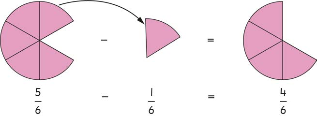

Mfano wa 2
Kwa kutumia mchoro tafuta jibu sahihi la swali lifuatalo.
Hatua
1. Chora tano ya sita ya duara.
2. Andika sehemu ya duara iliyotiwa kivuli kwa numerali.
3. Ondoa kipande kimoja ulichotia kivuli kwenye duara.
4. Andika kwa numerali sehemu uliyoiondoa.
5. Chora nne ya sita sehemu ya duara iliyobaki.
6. Andika kwa numerali sehemu ya duara iliyobaki.

Hivyo,
Kwa hiyo,
Mfano wa 3
Tafuta thamani ya
Njia
Toa kiasi kama unavyotoa namba, ukizingatia kuwa asili huwa haibadiliki.